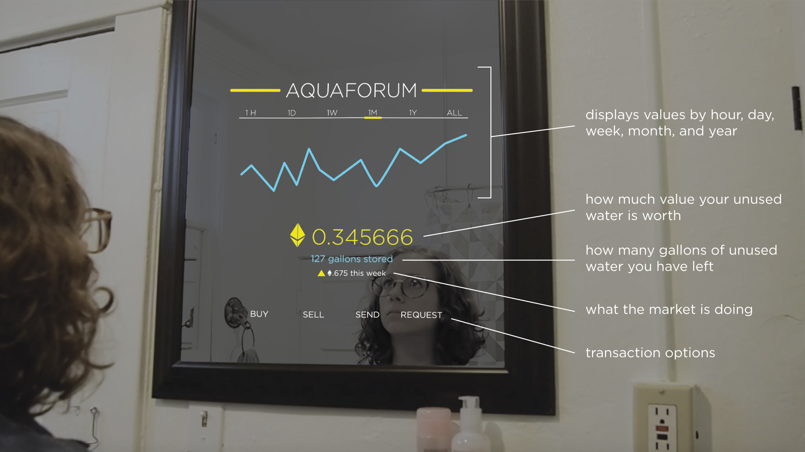

Aquaforum
Brief
Aquaforum is an online marketplace for water, set in the future 10-15 years.
Scope
Interaction Design & Speculative Design
Institution
University of Washington, Professor Dominic Muren

AN ONLINE WATER MARKETPLACE OF THE FUTURE
In the future, water access could become more restricted in order to avoid a water crisis. For this project I imagined a world 10-15 years in the future that would have to grapple with these restrictions and how technology might play a role in helping people work within these restrictions to meet their water needs.
Objective: To create a platform that allows people to transfer their unused alottment of water to other people for free or for a fee.
Solution: I designed a platform that utilizes the AI system that restricts water in order to allow transactions to happen without physically moving the water.
THE FUTURE
For a speculative project, it is important to clearly define the parameters of the future. As a catalyst for the future I envision in 10-15 years, I imagined what the reaction would be if Cape Town hit Day Zero. I imagined that there would be mass riots, possibly a local government overturned, etc. In my future world, I thought a city with similar water woes, like Los Angeles, would look at Day Zero in Cape Town and try to come up with a creative solution to prevent something similar from happening there.

With the advancements of Nests and other connected home management objects, it is not so unlikely to think that these systems would monitor all consumption in a home. In this future that I imagine, these devices would have the power to cut off switches or water taps when they feel you have been wasting resources. It is with this technology that a city low on water could control how much each household uses and give them a daily alottment. If they were to go over this alottment, their taps would be turned off for the day. If they didn't use their full daily alottment, what is left can be added on to their alottment for the next day.

The AI system shows usage by appliance, by month, year, etc. Aquaforum fits into this system and knows how many gallons a household has left for the day.
AQUAFORUM MARKETPLACE
One of the biggest benefits to Aquaforum is that it fits into the pre-existing AI that controls water usage. By using cryptocurrency, this system can be replicated in various cities with water issues, not just one in the United States.
The ability to sell and send features lets households decide what they want to do with their extra water. In a future reiteration of this project, perhaps sending water to a charitable organization could result in a tax write-off or other form of credit. The buying or requesting features allow households to decide how badly they need the extra water or allows them to create a narrative around why they should get water sent to them — maybe there is a GoFundMe for water attached to this request.
ANALYZING A TRANSACTION
Looking closer at the request/send feature, I thought about a possible successful use-case. We currently send money to strangers on the internet all the time, but water is more personal. In this scenario, a community garden is is making the request for a few more gallons to make their watering schedule complete. People living in that neighborhood who enjoy the garden have an incentive to send the garden water without expecting something in return.